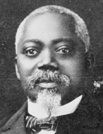

|

|

|
|
|
William Harvey Carney was the first African-American to receive the
Congressional Medal of Honor during the Civil War. He was born in
Norfolk, Virginia to a slave father who escaped to the North via the
Underground Railroad. The family settled in New Bedford, Massachusetts,
one of the major stops for fugitive slaves, and briefly the home of
abolitionist Frederick Douglass. Carney was working as a laborer when
the war broke out. In February of 1863, the Massachusetts Governor John
A. Andrew organized the first all-black regiment and called for
volunteers. Carney and thirty-nine other African Americans from New
Bedford joined the Fifty-fourth Massachusetts Regiment. The New Bedford
men were part of the Fifty-fourth's famed Company C.
Carney was selected to be a sergeant, one of the non-commissioned
officers of the unit. After training near Boston, the Fifty-fourth was
sent to Hilton Head, South Carolina, to participate in the Union
campaign to reduce the forts and batteries that protected Charleston. On
the night of July 18, 1863, the Massachusetts Regiment led an assault on
Fort Wagner, the main fortification that protected Charleston Harbor.
Commanded by Colonel Robert Gould Shaw, the Fifty-fourth displayed great
courage in battle. William H. Carney was one of the few to make it to
the top of the fort, where he rescued the regimental flag from the dead
color-bearer. Injured three times, Carney survived the battle, and upon
entering the field hospital for wounded men he told his comrades: "Boys,
the old flag never touched the ground."
The regiment saw further action in South Carolina and Florida before
disbanding. Carney was officially discharged on June 30, 1864. He
returned to New Bedford and worked as a mail carrier, and later as an
elevator operator in the Massachusetts State House. After the war,
William H. Carney gave many speeches recounting his role in the battle
of Fort Wagner. He became a symbol of African-American manliness and
courage, and he was memorialized in paintings and sculpture. Carney's
Medal of Honor was awarded to him in May of 1900, nearly 37 years after
the attack on Fort Wagner. Carney died on December 9, 1908 in Boston,
Massachusetts.
Source: Joan Waugh, ed., Facts on File Encyclopedia of American
History: Civil War and Reconstruction, 1856 to 1869 (New York: Facts on
File, 2003), 49.
|